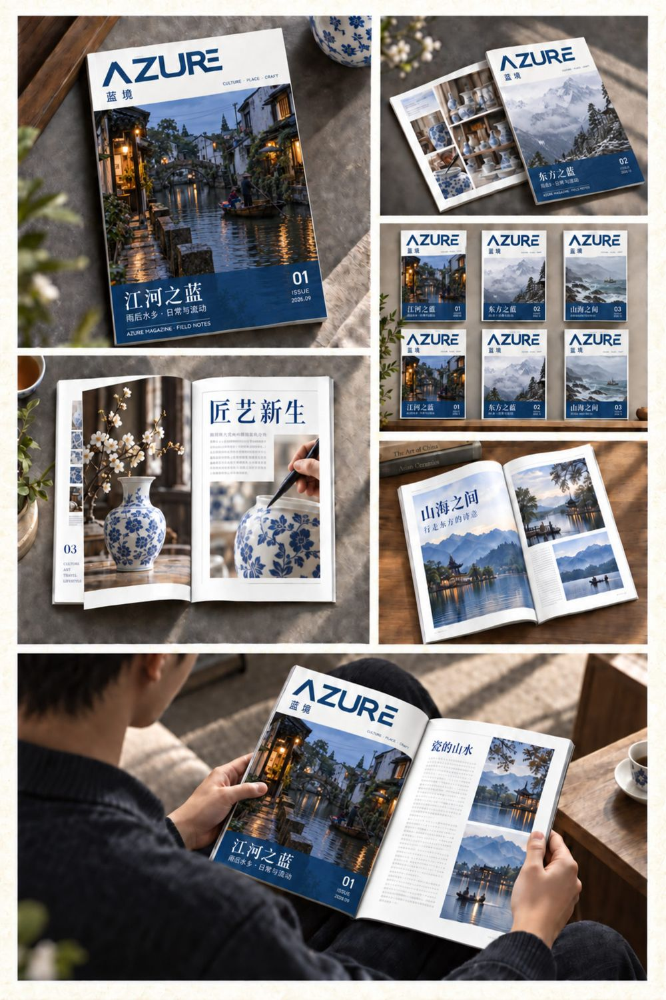
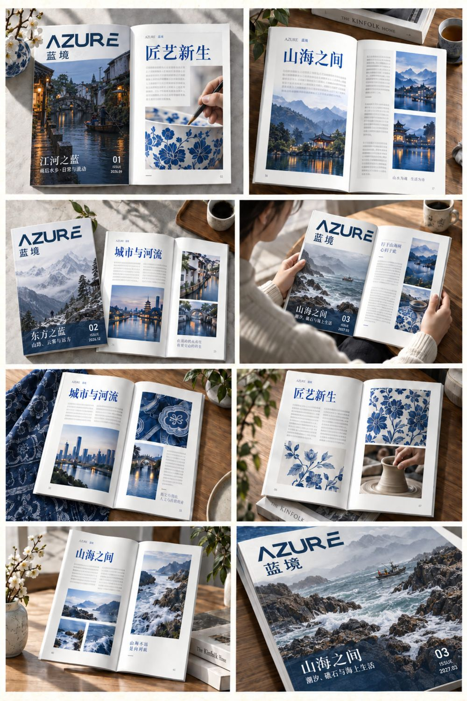
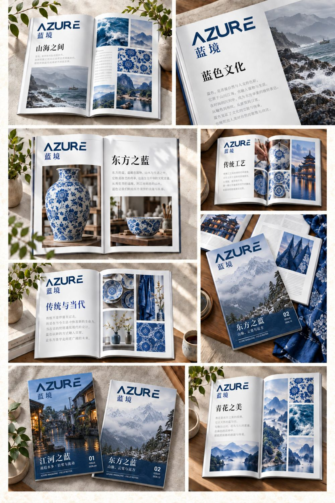
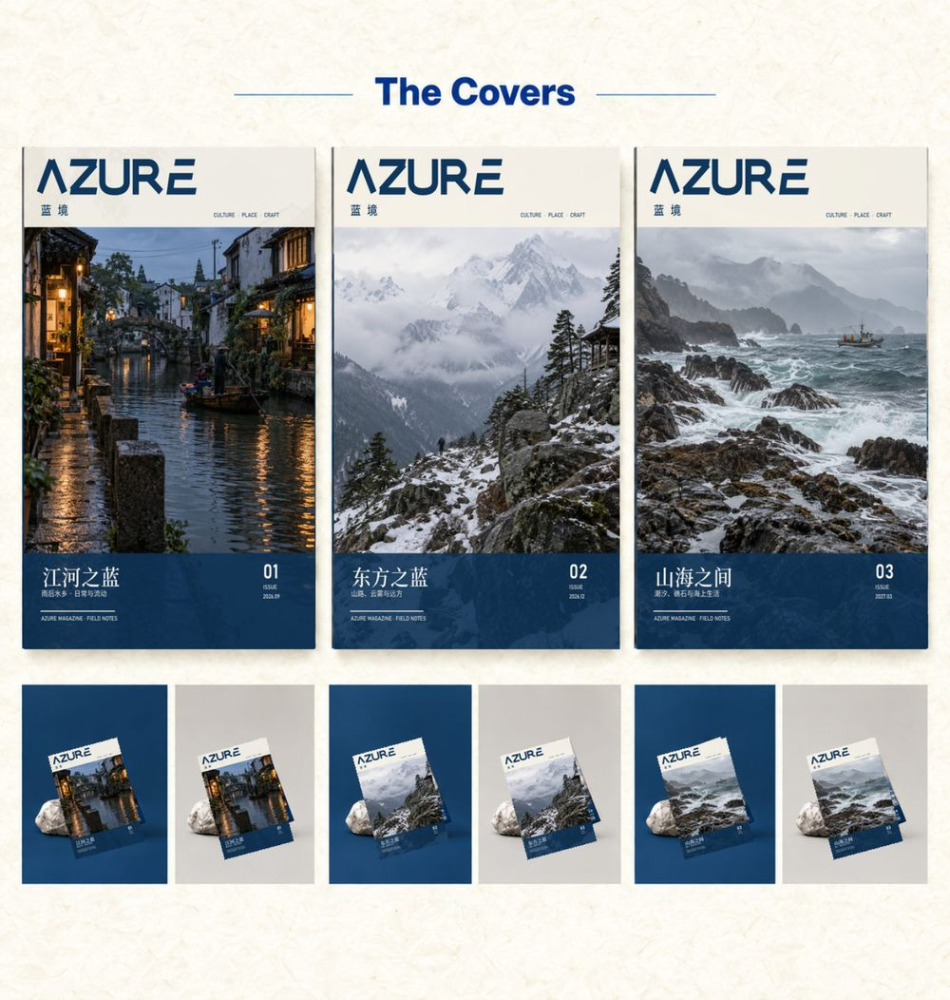
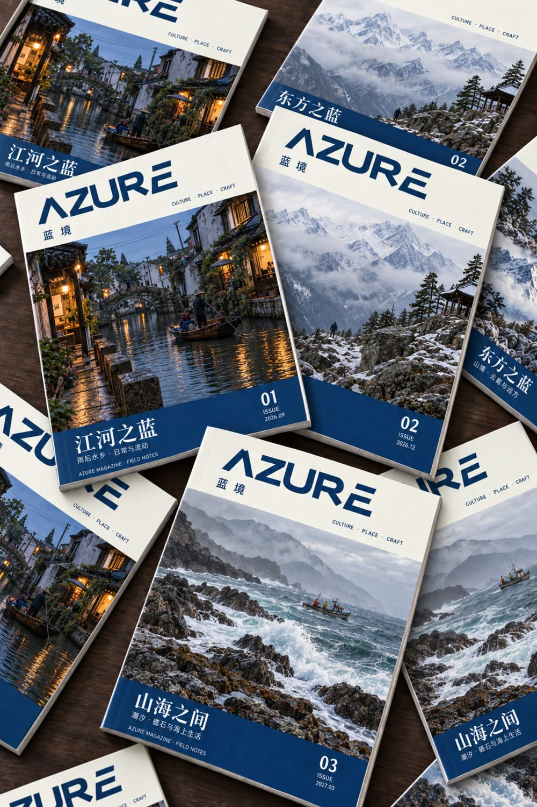

← 返回编辑设计
蓝境 AZURE 文化旅行杂志编辑设计
以「蓝」为贯穿自然与文化的视觉线索，为《蓝境 AZURE》建立可持续延展的旅行杂志系统。稳定刊头、深蓝信息栏、主题摄影与灵活内页网格共同连接江南、雪山、海岸及传统工艺。
以「蓝」为贯穿自然与文化的视觉线索，为《蓝境 AZURE》建立可持续延展的旅行杂志系统。稳定刊头、深蓝信息栏、主题摄影与灵活内页网格共同连接江南、雪山、海岸及传统工艺。




